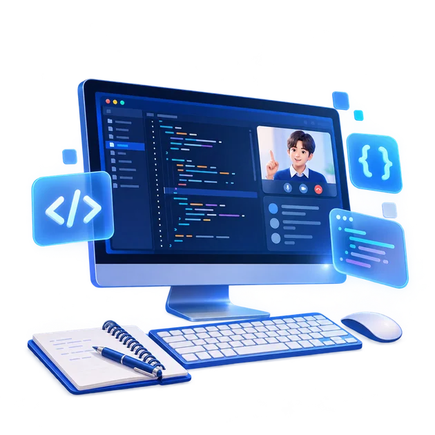
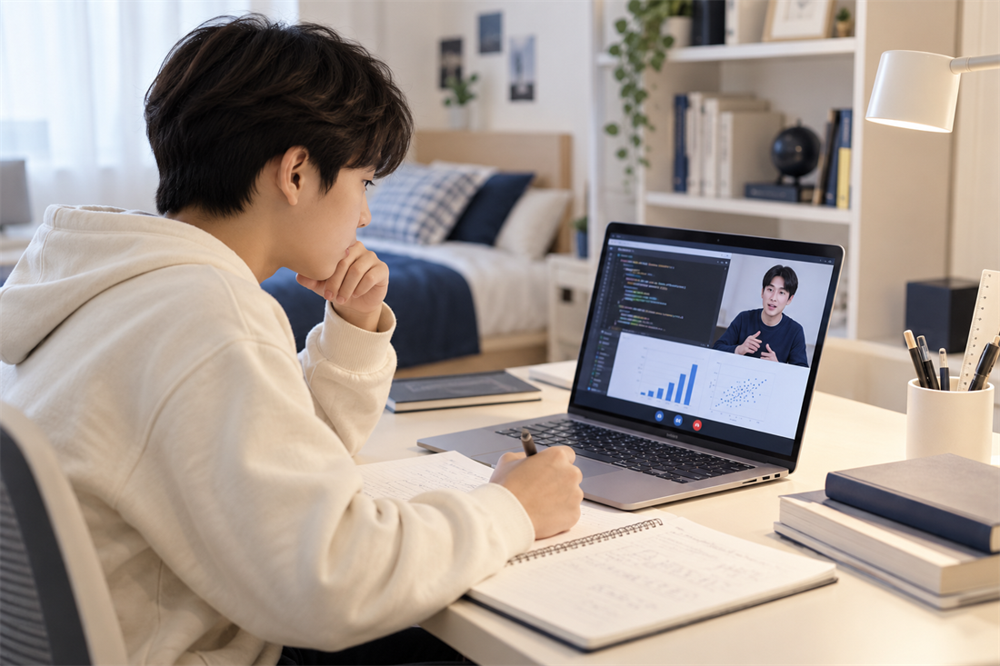

코딩을 처음 시작하는 학생
코딩이 처음이라 무엇부터 해야 할지 막막한 학생
코딩을 처음 시작해도 괜찮습니다. 방학에는 기초와 실습을, 학기 중에는 학교 내신을 수준에 맞춰 1:1로 차근차근 준비합니다.

녹화 강의를 보는 방식이 아니라, 선생님과 같은 시간에 화면으로 만나 질문하고 답하며 진행합니다.
정해진 시간에 선생님과 화면으로 만나 1:1로 수업합니다.
코드가 막히는 순간 바로 묻고, 원인을 함께 찾아 해결합니다.
수업 녹화 기능을 활용해 수업 후 다시 보며 복습할 수 있습니다.
학생부터 직장인까지, 코딩을 배우고 싶은 이유는 달라도 시작은 현재 수준을 아는 것부터입니다.
코딩이 처음이라 무엇부터 해야 할지 막막한 학생
학교 수업 진도를 따라가기 어렵거나 내신 준비가 필요한 학생
배운 내용을 활용해 직접 동작하는 프로그램을 만들어보고 싶은 학생
순서와 조건을 정리하며 문제를 풀어가는 힘을 기르고 싶은 학생
코딩 경험은 조금 있지만, 자바·파이썬 같은 텍스트 코딩을 제대로 시작하고 싶은 학생
작은 아이디어라도 처음부터 끝까지 직접 완성해보고 싶은 학생
처음이라 막막해도, 화면을 함께 보며 작은 실행 결과부터 하나씩 확인합니다.
현재 수준과 학습 목표에 맞춰 아래 분야 중 필요한 부분을 중심으로 수업합니다.
자바 문법과 기본 구조를 익히고 직접 코드를 작성해 봅니다.
파이썬으로 기초 개념을 익히고 간단한 문제를 해결해 봅니다.
변수, 조건, 반복 등 프로그래밍의 기본 개념을 이해합니다.
큰 문제를 작은 단계로 나누고 막힌 부분의 원인을 찾아 해결합니다.
학교 학습과 코딩 관련 내신 범위에 맞춰 준비합니다.
방학 동안 기본 개념과 실습을 집중적으로 익혀 학기 중 수업에 대비합니다.
방학 동안 코딩의 기본 개념과 실습을 집중적으로 익히고, 학기 중에는 학교 정보·프로그래밍 수업에서 배우는 내용을 이해하는 데 연결합니다. 학교에서 코딩을 배우는 학생이라면 시험 직전에만 준비하기보다 기초부터 꾸준히 익히는 것이 중요합니다.
학교·학년별 교육과정과 평가 범위가 다르므로 실제 수업 계획은 상담에서 확인합니다.
PC 또는 노트북과 안정적인 인터넷, 카메라·마이크 환경에서 진행합니다. 과정별 필요한 프로그램과 설치 방법은 상담에서 안내합니다
월 300,000원
주 2회 · 1회 60분 · 한 달 기준
실제 수업 시간과 과정은 상담 후 정하며, 구성 변경에 따른 최종 비용은 상담에서 안내합니다.

직접 작성한 코드를 실행해 보고, 결과가 왜 그렇게 나왔는지 선생님과 함께 짚어 봅니다.
같은 언어를 배워도 수준에 따라 수업 내용과 속도가 달라집니다. 코딩 경험이 있다면 상담에서 지금까지 배운 언어와 내용을 확인해 시작 단계를 정합니다.
이론만 듣는 수업이 아니라, 작은 프로그램을 직접 만들어 보며 배웁니다.
수준에 맞는 주제를 정하고 무엇을 만들지 함께 그려 봅니다.
필요한 기능을 작은 단계로 나누어 순서를 정합니다.
선생님과 화면을 함께 보며 직접 코드를 작성합니다.
막힌 부분의 원인을 찾아 스스로 고쳐 보는 연습을 합니다.
완성한 결과를 함께 점검하고 다음 학습 방향을 정합니다.
만들고 싶은 기능을 종이에 정리한 뒤, 순서대로 코드로 옮기며 프로그램을 완성해 갑니다.
학생의 수준과 목표, 희망 일정을 고려해 맞는 선생님을 안내합니다.

막힌 부분은 정답을 바로 알려주기보다, 원인을 함께 찾고 스스로 고쳐 보도록 이끕니다.
선생님 배정 기준과 절차는 상담 시 학생의 수준과 목표를 확인한 뒤 안내드립니다.
무료 체험수업으로 현재 수준과 수업 방식을 먼저 확인해 보세요. 희망 과정과 일정에 맞춰 진행 방법을 안내합니다.
코딩 무료 체험수업 상담 신청